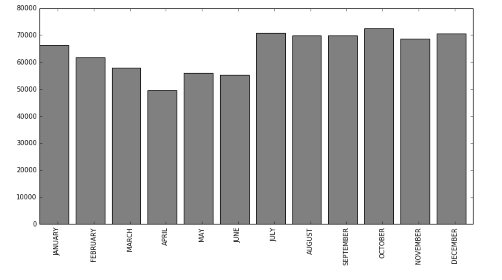
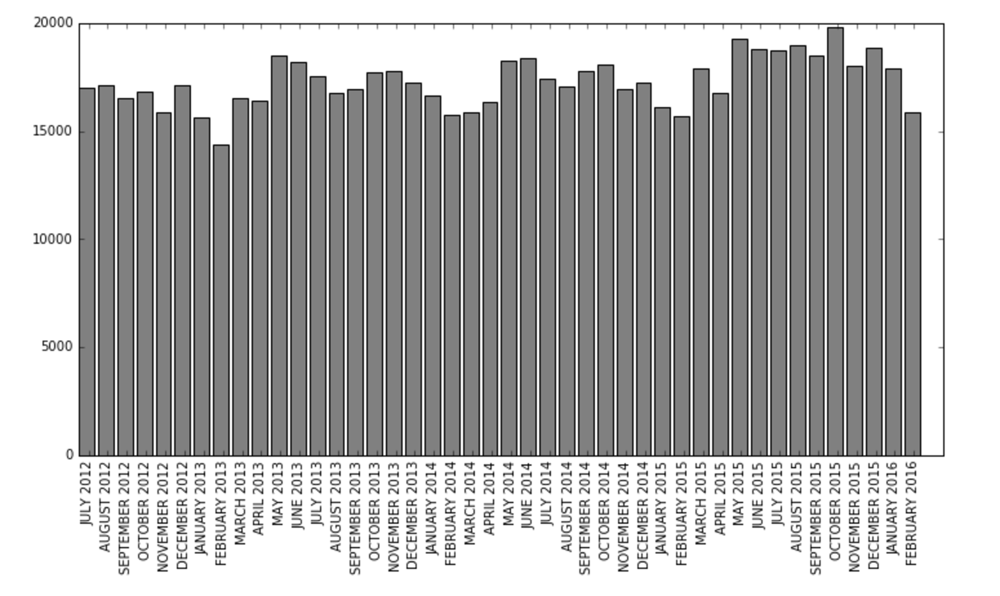
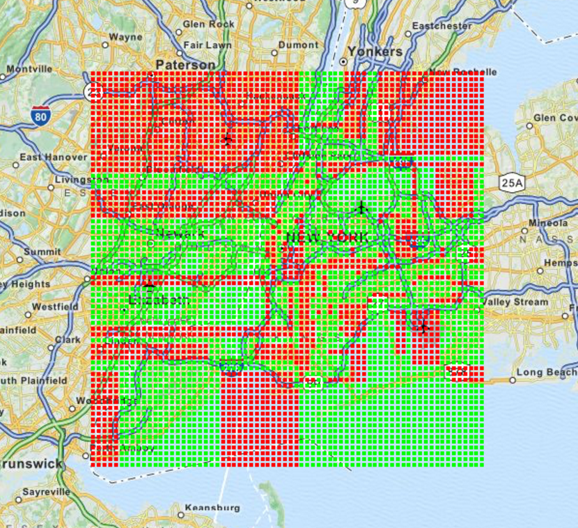
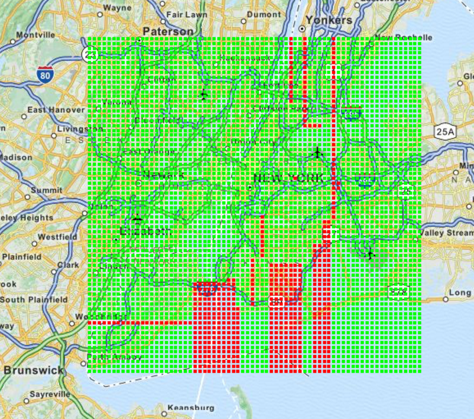

Introduction
This website present an analysis on the new york open data set on motor vehicle collisions. General statistics of the dataset as well as machine learning methods are presented bellow. In more detail we present the distribution of the accidents over month and their evolution through time, an analysis of the most dangerous intersections, a predictor of the most dangerous locations according to the car you drive and the current time and a cluster analysis of the accidents location.
Basic statistics
 
Top 100 most dangerous intersections in New York
Brooklyn
Manhattan
Queens
The most dangerous intersection is Tillary Street and Flatbush Avenue extension in Brooklyn with a total of 585 accidents. Most of the accidents occur in Manhattan, followed by Brooklyn, Bronx and Queens.
Clusters of traffic accidents in New york
Appliying Kmeans-clustering to our dataset we found 4 different representative areas, this graph shows this areas and the amount of accidents in each
Dangerous areas
A decision tree classifier was trained to determine the dangerous locations (red area) for a given vehicle on a given time. For example bellow are shown the dangerous areas for a taxi driving at 15:00 and for a truck driving at 17:00.
Dangerous areas for a taxi driving at 15:00
Dangerous areas for a truck driving at 17:00